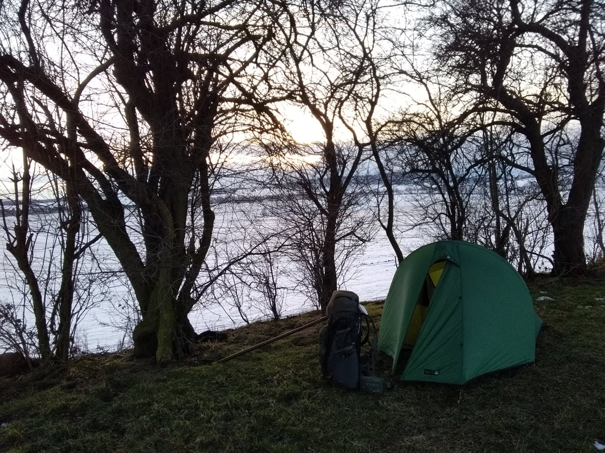
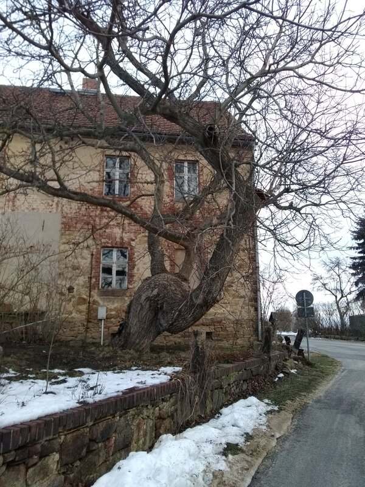
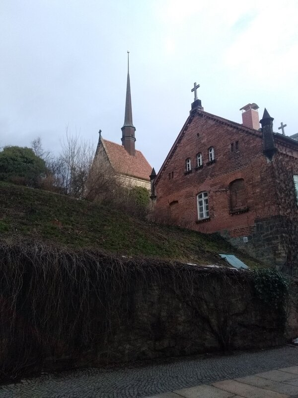
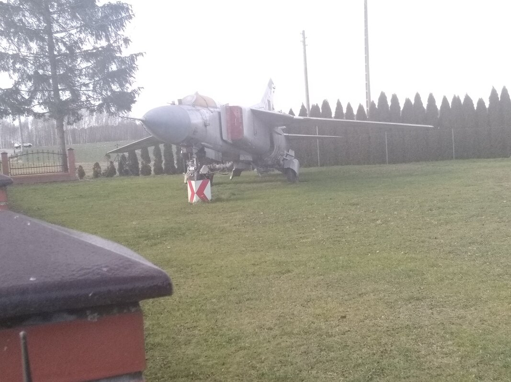
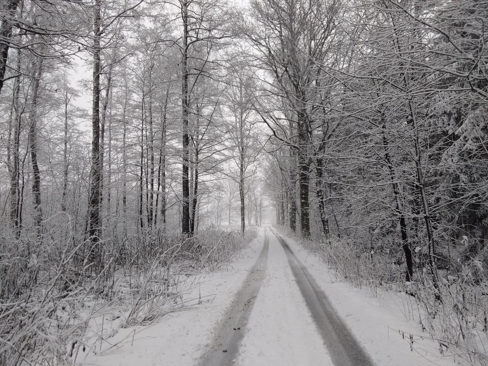
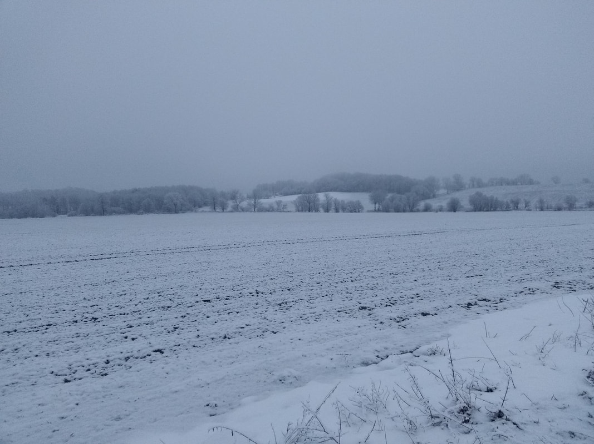
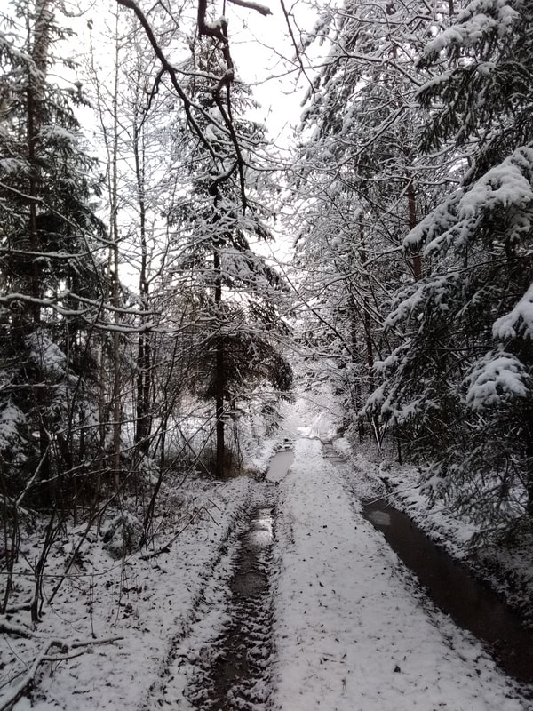
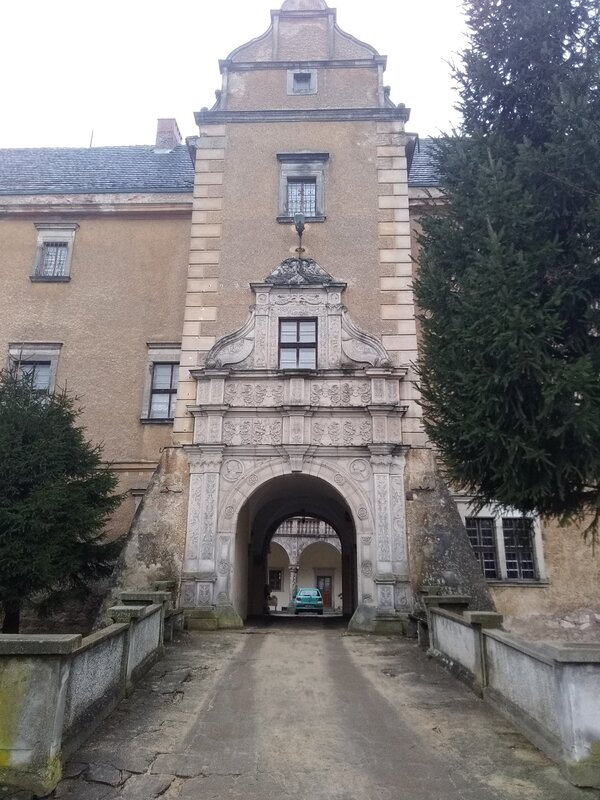

First Week in Poland
Dear friends, hello.
It’s been a while since I shared any news. Please note that this is probably the last update you’ll receive from me on WhatsApp. Following the latest (and, let’s face it, imposed) update to the app and my strong disagreement with its privacy policy concerning the use of personal data—especially since WhatsApp was acquired by Facebook—and knowing that there’s an equivalent to WhatsApp that seems more trustworthy (among other things, it’s non-profit), I’ve decided to migrate to Signal.
I am therefore leaving WhatsApp and strongly encourage you to do the same. You can download Signal here: https://signal.org/install.
So, that’s that.
Now for the news.
I’ve been in Poland for a week and I’m still moving forward, but perhaps even more slowly. The weather over the past 15 days has been a bit harsh, and even though I enjoy the cold, walking under snow and wind significantly slows my progress. Folding up a frozen tent in the morning takes much longer, too.
I must admit that everything feels more tiring. I imagine I’m burning more calories due to the conditions, but I also think that having walked for nearly 4 months non-stop, apart from the occasional day off spent resting in the tent (about one day of rest per week or every 10 days), is finally taking its toll. I’m starting to feel the combined weight of walking and carrying the backpack. So, I’m not forcing myself—I’m taking it easy to ensure I can keep going further.
Add to that my painful feet (I’m essentially walking barefoot in my five-finger shoes), cold and wet from slush (up to 25 cm deep), and it’s easy to see why I’m only managing about a dozen kilometers per day. I’ll definitely need a vacation when I arrive!
My arrival in Poland was under good omens. Under normal circumstances, I wouldn’t have been able to cross the border due to movement restrictions from the virus. However, a phone call the day before from my German host to the police at the border in Görlitz reassured me. The officer on duty explained that crossing the border to buy cigarettes or alcohol (as prices differ significantly between Germany and Poland) was out of the question. But for a guy walking all the way from France on a pilgrimage to Częstochowa? That was a totally different story. Of course, I was allowed to cross the border, and so I did.
My first interaction with the locals—well, “native indigenous people”, if you’ll pardon the redundancy—was equally reassuring. I stopped to ask for water to refill my bottles, and the man invited me into his home. He told me to put my bag down, take off a few layers, and have coffee. He refilled my bottles with hot tea, filled my thermos with hot coffee, gave me a little something to eat while chatting with his son on the phone, and even offered for me to stay the night since the snow had started falling even harder.
It was very difficult to refuse such a kind offer, but I wanted to make a bit more progress that day. Still, I spent three hours with an incredibly nice couple—super welcoming, caring, and enthusiastic—even though they didn’t speak a word of English or French!
This will be a challenge to manage in Poland so far: people here don’t seem to speak English at all—not even basic phrases like “thank you” or “bye-bye”. However, I am in the countryside, where English might be less prevalent and is perhaps only taught to the younger generation.
So, I’m back to improvised sign language, mime, and Google Translate—when there’s network coverage! But goodwill makes everything surmountable.
There’s also something very heartening: when I mention that I’m on a pilgrimage to Jasna Góra, people immediately know what I’m talking about. It resonates with them, and they understand. That feels good.
Voilà.
I’m attaching some photos in “vrak”!
See you soon on Signal!

















0 Comments